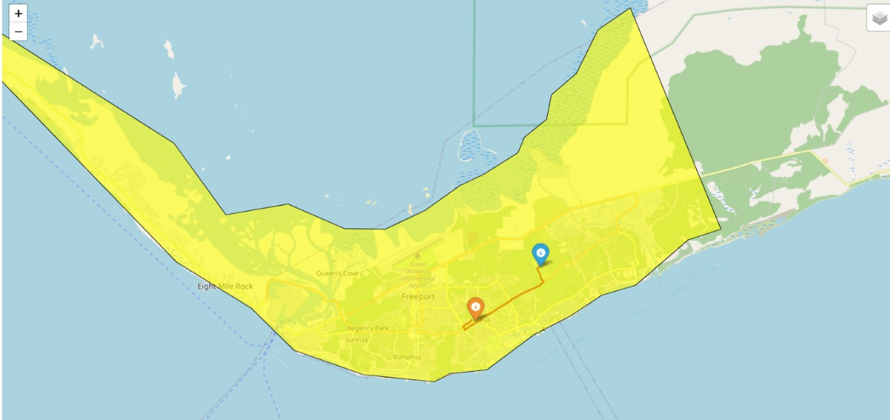
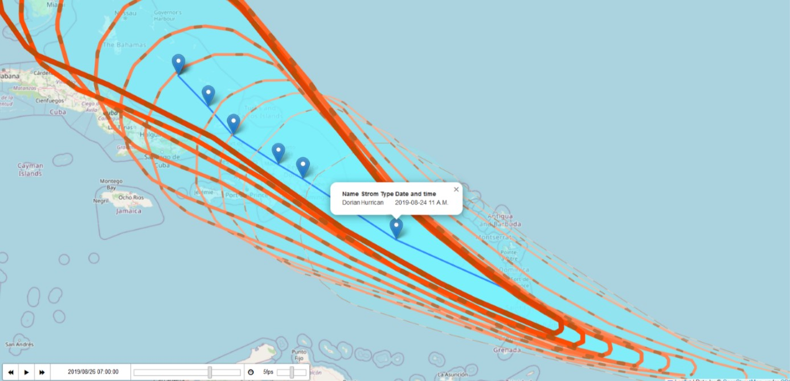

I. Data & Tools
Data & Sources
- Hurricane Dorian path (NOAA)
- Boundary of area of interest (self-generated)
- Flood mask (Copernicus Emergency Management Service)
Tools
For more information on the python packages used see Additional Resources below- OSMnx: OSMnx was used for routing analysis as it enabled the creation of real-world street networks to visualize the routes emergency services can take during a flood event.
- Folium: Folium was used to visualize the hurricane's movement as well as different vector elements (such as marker location)s on the hurricane app.
- Flask: Flask was used as a framework to host the two web routing and hurricane visualization mapping applications for easy organization and deployment.
II. Web application & flask set up
The libraries used to develop the web application include: flask, osmnx, folium and geopandas. Flask, a lightweight web server gateway interface (WSGI) for web application development using python, provided the framework within which the routing and hurricane visualization applications were developed and hosted.
The web application homepage was designed using HTML. The homepage allows a user to insert coordinates for the starting and endings point that they want to used in the Flood Routing Generator. The routing map then uses the provided coordinates to provide users with the best path for a vehicle to take between the two points. Users can click on the route to reveal the hurricane track and movement maps.
Methodology for developing the web application
- Created an environment and installed all the required packages
- Imported all the packages
- Created a Flask interface application with the name @app and specified the path. In this case we have 3 paths: base, generate_route and hurricane_path
@app.route("/")- This route handles the default root URL@app.route("/generate_route")- uses the starting and ending latitude and longitude values to calculate and display the shortest route on a map using folium.@app.route("/hurricane_path")- here we display the path for hurricane dorian in an interactive manner
Steps to Install and Deploy the FLASK web application
- Install the application using conda
- Navigate to the main.py file and set the correct path to the Grand_Bahama.shp and hurricanepolygon.shp which are in the data folder.
- Navigate to the index.html file in the templates folder and set the correct path to the Grand_Bahama.shp and hurricanepolygon.shp which are in the data folder.
- Run the script python main.py in your console and a url will be provided to visualize the application in your local machine.You should have something like this:
- To view the hurricane map change the local host path from …/generate_route to /hurricanepath.
III. Routing

The OSMnx library was used for the routing portion of this project. Osmnx is a python package that lets you download geospatial data from OpenStreetMap and model, project, visualize, and analyze real-world street networks and any other geospatial geometries.
IV. Hurricane Visualization

This part is divided into 2 maps
Hurricane Formation Animation
This map shows the formation of Hurricane Dorian from the first day to the last day of the event. The hurricane formed on August 24, 2019 from a tropical wave in the Central Atlantic and gradually strengthened as it moved toward the Lesser Antilles and then hit the Grand Bahamas on August 26, 2019.
The hurricane edges have animated lines with movement effects using AntPath plugin of Folium Python module. The lines plot a route between multiple locations with the help of latitude and longitudes.
"AntPath" is an external plugin that allows you to create animated polylines on a Leaflet map. It adds a unique visual effect to your maps, making it look like ants are moving along the polylines. It provides a visually appealing way to display paths or routes.
Features:- Animated ant-like movement along polylines, so in this hurricane event, we used this plugin to visualize the movement of each hurricane.
- Customizable options for animation speed, color, weight, and more.
- Support for both straight lines and curved polylines (Bezier curves).
- delay: Delay between animation steps in milliseconds (default: 400).
- dashArray: Array defining a pattern of dashes and gaps for the ant path (default: [10, 20]).
- weight: Weight of the ant path polyline (default: 5).
- color: Color of the ant path polyline (default: '#FF0000').
- pulseColor: Color of the pulse effect when ants reach the end of the path (default: '#FFFFFF').
- Locations: Locations through which the ant-path is going.
- Use: Type of shape to use for the ant-path. Possible values are ‘polyline’, ‘polygon’, ‘rectangle’ and ‘circle’.
- Paused: Whether the animation is running or not.
- Reverse: Whether the animation is going backwards or not.
- Radius: Radius of the circle, if use is set to ‘circle’
Methodology for developing the hurricane application
- Initialize the map: Use the Leaflet library to create a map instance, providing the map container ID and initial settings (center, zoom level, etc.). ``` latlon = [x, y] map = folium.Map(location = latlon, tiles='cartodbdark_matter', zoom_start = 5) ```
- Add a polyline: Create a polyline using the Leaflet library and add it to the map.
- Initialize "AntPath" plugins: After adding the polyline, initialize the "AntPath" plugin by passing the polyline and any optional configuration parameters.
- Create antpaths and add to map
Hurricane Track with Timestamps
This map shows the Hurricane Tracks evolving over time from the starting point (24 August 2019, 11 A.M.) to the end of hurricane event (26 August 2019, 11 P.M.). The TimestampedGeoJson plugin is an extension to Folium that allows users to display time-series data on a map using GeoJSON files with timestamps. This plugin is particularly useful for displaying temporal data such as the movement of objects, changes in events over time, or any other time-based geospatial information.
The TimestampedGeoJson plugin is an extension to Folium that allows users to display time-series data on a map using GeoJSON files with timestamps. This plugin is particularly useful for displaying temporal data such as the movement of objects, changes in events over time, or any other time-based geospatial information.
Data Format: The input data for the TimestampedGeoJson function should be in a GeoJSON-like format with time-series information. Each feature in the GeoJSON should have a properties attribute that includes a time field representing the timestamp for that feature. The time field should be in ISO 8601 format, in our project we used date options to "YYYY/MM/DD HH:mm:ss" because the hurricane moved every 3-4 hours.
Parameters:- data: The GeoJSON-like data containing time-series information.
- transition_time: The time interval for animation transitions in milliseconds (default: 200 ms). .
- loop: Set to True if the animation should loop (default: False).
- auto_play: Set to True to automatically start the animation when the map is loaded (default: True).
- add_last_point: Set to True to display the last timestamped point (default: True).
- period: The ISO 8601 duration string specifying the time period for each step (default: 'P1D', which stands for one day, in our script we set to every two hours PT2H).